- Inicio
- Marketing Fest
- 2da edición
27 y 28 de octubre de 2026
Marketing Fest 2026
El 27 y 28 de octubre de 2026 la FCE UBA fue el lugar del marketing. Dos días de charlas y paneles con Meta, McDonald's, Pepsico, Rappi, CCU, Tiendanube, Bayer, Logitech y muchas más. Gracias por venir.
- 2
- días, de 14 a 21 hs
- +30
- speakers
- 21
- charlas y paneles
- 8
- presentaciones para descargar
Las presentaciones
ManuBajalas en PDF. Las que faltan las subimos apenas nos lleguen.
- Acreditaciones · Introducción y bienvenida
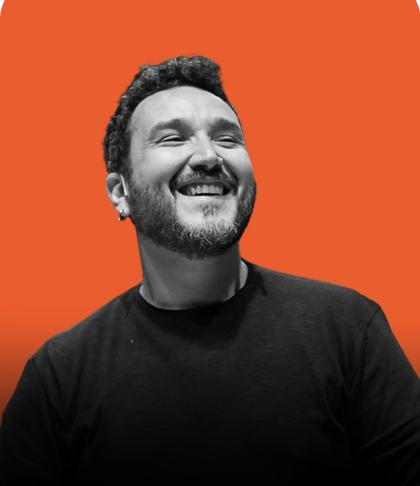
Julián OcampoInfluencer y founder, Play x Fun y Escuela de UGCCómo vender en Instagram Stories-
Federico BongiornoEverest Media y EcodiemCrecer con método: cómo diseñar un sistema que multiplique tu adquisición
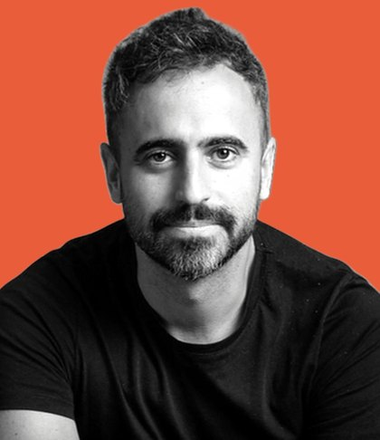
PanelNorman Ventre y Sergio DovalHead of Marketing de Bayer y CEO & Founder de TaquionLa campaña empieza antes de la creatividad. Modera Diego Miranda Iglesias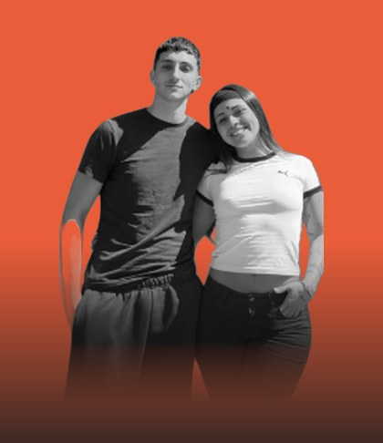
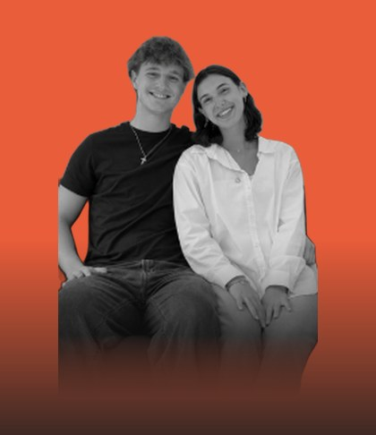
Panel de influencers con marcaGiuliana Lourdes, Santino Bellizzi, Facundo Mey y Malena RiesgoPorfa Café y Con El KoraDe comunidad a marca. Modera Julieta Skilki- Break · Comida, stands y música
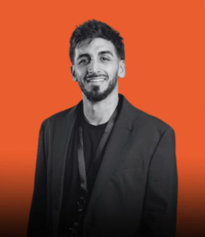
Federico Feres y Solana EpszteynCEO y founder de Go For Marketing y directora comercial y de marca de SantaclaraEl próximo consumidor en moda: herramientas de citabilidad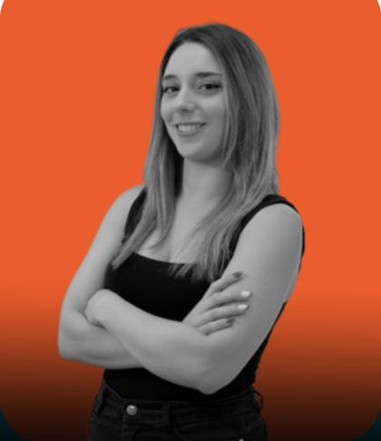
Celeste D'AndreaEspecialista en e-commerce, Tienda NubeEl motor de tu negocio: cómo escalar con el ecosistema Tiendanube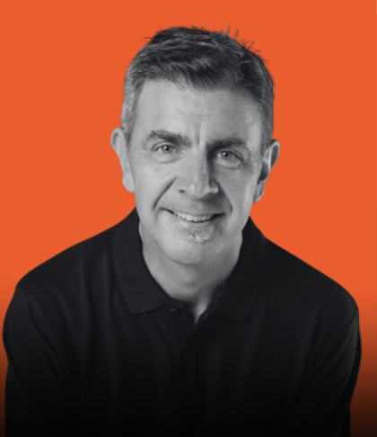
Marcelo RomeoCEO y partner de AgensLa nueva era de las marcas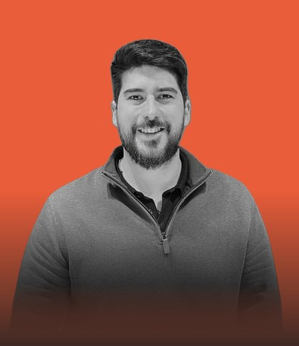
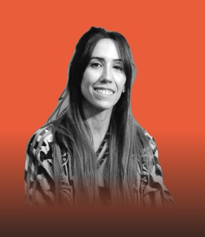
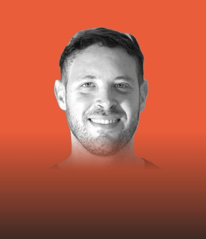
Panel de marcasNahuel Beneitez, Natalia Landa y Kevin GorfinkelDirector de marketing de Hudson Kitchenware, marketing manager de Pepsico y founder & CEO de Growing GroupDe entender al consumidor a hacer crecer una marca. Modera José Antonio Stracquadaini- Break · Comida, stands y música
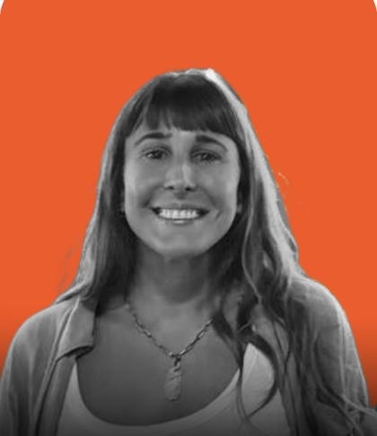
Catalina SmidtMcDonald's (Arcos Dorados), Brand, Menu & Innovation GrouperMcDonald's, el caso mundialista que rompe récords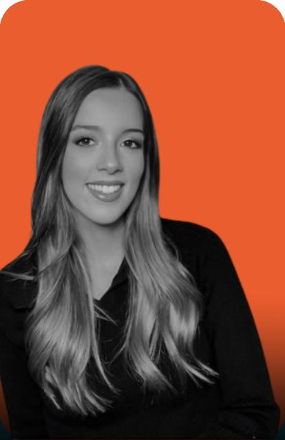
Sabrina KolodLicenciada en marketing, speaker e influencerReal Time Marketing: cómo convertí el Mundial en +100 contenidos y qué puede aprender tu marcaLa presentación llega pronto- Cierre del día 1 · Mañana seguimos
- Acreditaciones · Introducción y bienvenida
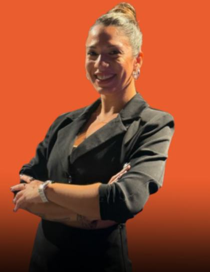
Fernanda RiveraFounder de MarkusLa evolución de la inteligencia artificial y su impacto en los negociosLa presentación llega pronto-
Mariano GaribiniFounder de La Pareja Tester
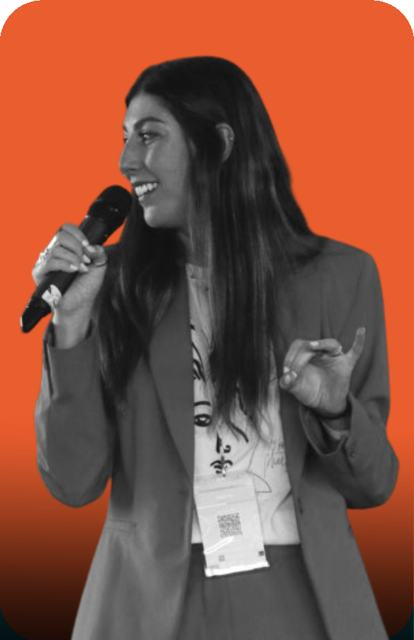
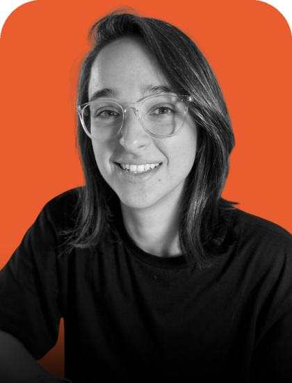
Aldana Abadi y Carolina DubianskyCarolina Dubiansky y Fandel Mkt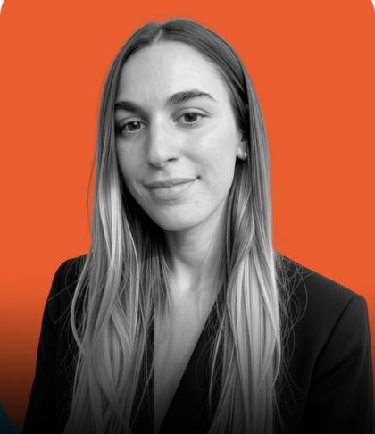
Carolina GelerFounder & CEO de Komin Sabor DigitalTu próximo cliente está scrolleando con hambre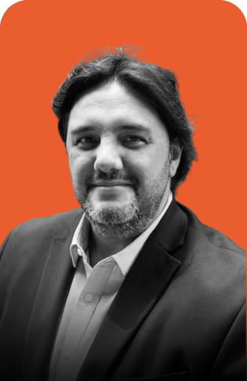
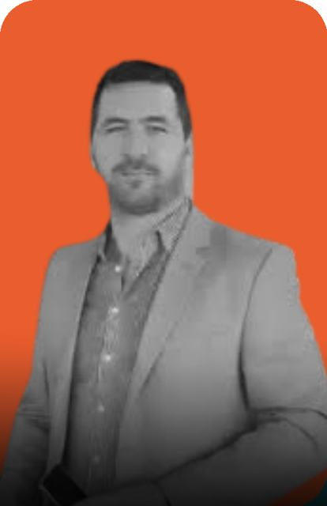
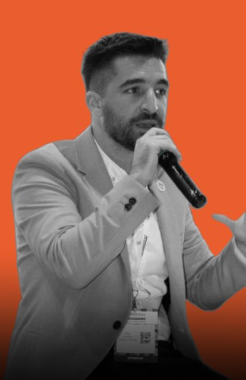
Panel de franquiciasSebastián Ríos, Alejo Canudas y Emiliano BaratzGrupo RE, Canudas Franquicias y La PinochaMarcas en expansión: marketing para impulsar franquicias. Modera Adolfo Wiegrebe- Break · Comida, stands y música
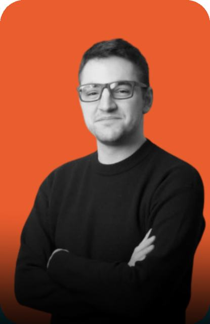
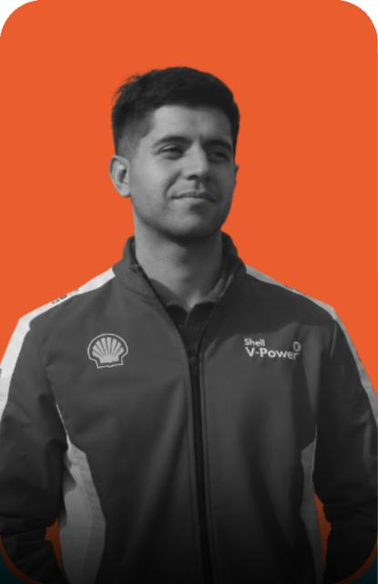
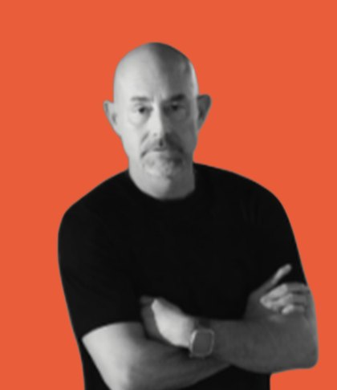
Panel gamerValentín Rementería, Lautaro Bordón y Walter CostabelKRU, Shell, LocalStrike y LogitechGame over al marketing tradicional. Modera Lucas Landa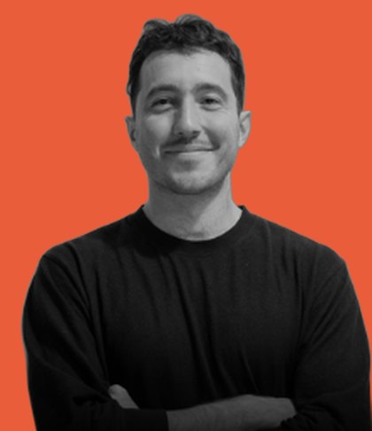
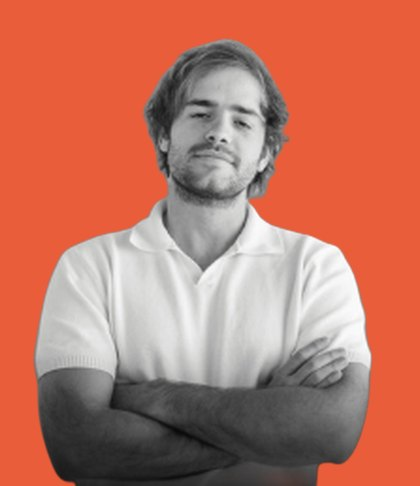
Juan Pablo Brea y Santiago GiovannettiFounder & CEO y head of agentic AI de ABN Group¿Cuándo fue la última vez que hiciste algo por primera vez?La presentación llega prontoPodcast #10-
Panel de logística y distribuciónAgustín Arias Usandivaras y Sebastián LutzBrand manager de Heineken y Sol (CCU) y gerente de marketing de PickitEstar donde está el consumidor: distribución, logística y el desafío de llegar en el momento indicado. Modera Rocío Vallbona
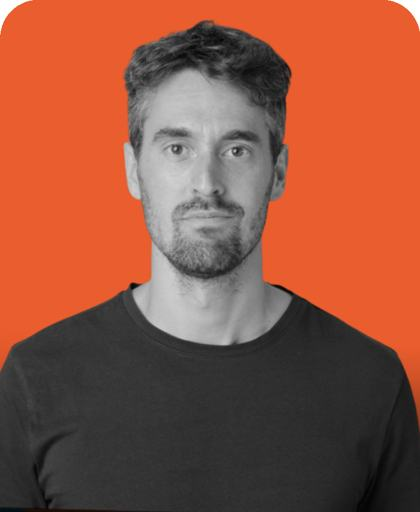
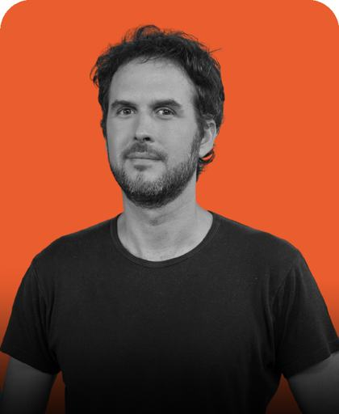
Mariano Felix Rica y Francisco GrancelliMeta, Regional Client Solutions Partner y Regional Retail & Tech Client PartnerCooling break: aprovechar la pausa para entender el nuevo juego digitalLa presentación llega pronto- Break · Comida, stands y música
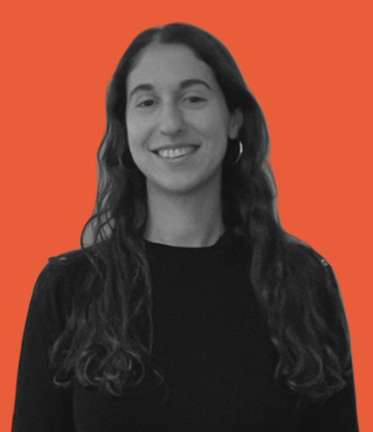
Tamara StronguinHead of Growth de RappiEl balde rotoLa presentación llega pronto-
Tomás CazaláFounder & CEO de DT Comunicación, Doble Dosis y FlashTag
- Cierre del evento · Nos vemos en la 3ra edición
Gracias a las marcas que lo hicieron posible
Sponsors

Media partners
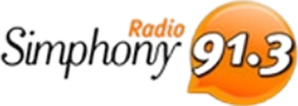
Con el apoyo institucional de
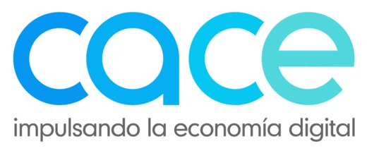
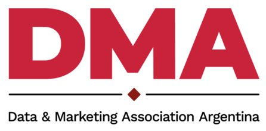
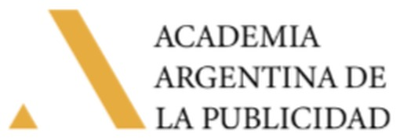
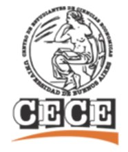
¿Tenés una marca? Hablemos.
¿Querés sumar tu marca a la 3ra edición del Marketing Fest u organizar un evento propio? Escribinos.